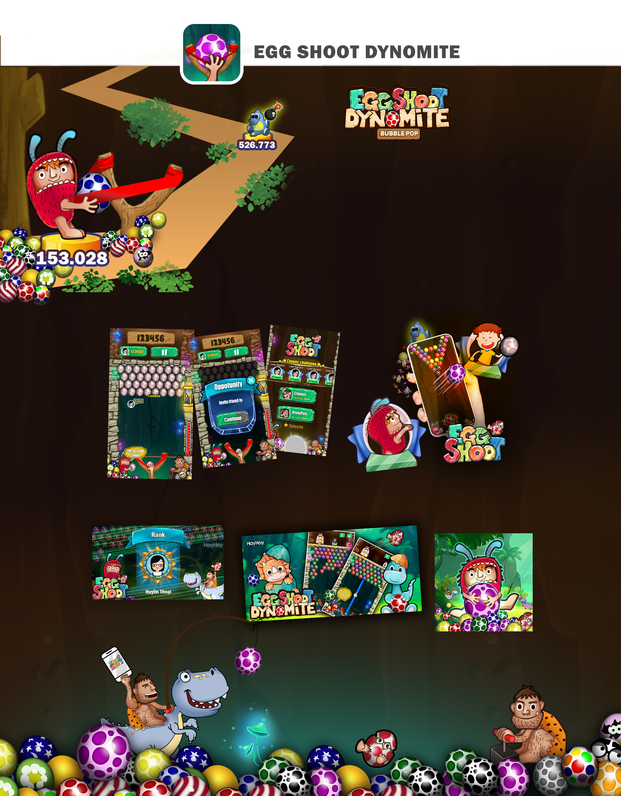

Năm sản xuất: 2015
Thể loại: Hyper casual
Nền tảng hiện tại: Store 1M+ / Facebook 549k active
Egg shoot là một câu chuyện thú vị; sinh ra năm 2015 đến 2019 thì bủng nổ. Cho đến nay, Eggshoot vẫn là game đem lại doanh thu nhiều nhất cho cty trên nền tảng facebook.
Game đã từng nằm trong top 3 doanh thu facebook năm 2021. có thời điểm lượt active lên đến 14tr.
Bản thân game đã trải qua rất nhiều vòng vận hành để duy trì và cải thiện chỉ số game. Art style này do mình vẽ từ đầu và tham gia quá trình vận hành cho đến năm 2024.
Thật hạnh phúc khi tạo ra em nó